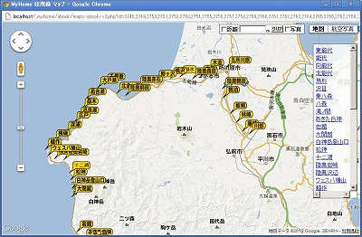
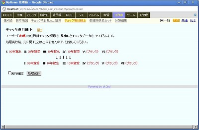
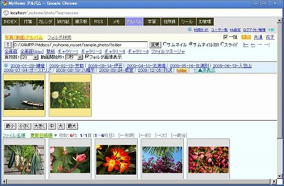
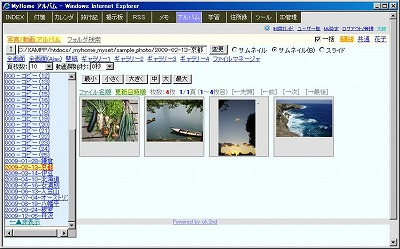
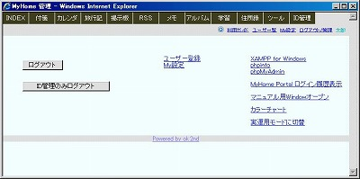

MyHome Portal 変更履歴
以下は、バージョン3.14以前の履歴です。 最新(3.15以降)の履歴に戻る
MyHome Portal Ver.3.14 (2011/01/16)
- 変更点
- ツール「ファイルマネージャ」に、ファイルアップロード機能を追加。
複数ファイルの一括アップロードもできます。Chromeでは、アップロードファイルのファイルパスに日本語が含まれていると、エラーになります。(環境(?)によっては、正常動作する模様です。)
一括アップロードは、以下のライブラリを利用しています。
「Multiple File Upload With Progress Bar Using jQuery」
http://webdeveloperplus.com/jquery/multiple-file-upload-with-progress-bar-using-jquery/
「SWFUpload jQuery Plugin」
http://blogs.bigfish.tv/adam/2009/06/14/swfupload-jquery-plugin/ - 「ファイルマネージャ」に、フォルダ作成機能を追加。
- 「ファイルマネージャ」で、ファイル・サイズ、ファイル・タイプ別の並び替えもできるようにしました。
- 「ファイルマネージャ」で、ファイル並び替えやファイル操作時になるべくスクロールアップしないように改善。
- メモ、掲示板、旅行記で、アタッチファイルをアイコン表示していたのを、ファイル名表示に変更。
- INDEXトップページに「百度」検索ボタンを追加。
- include-common-all.phpのfile_upload()がファイルディレクトリが日本語対応になっていなかったのを修正。
- 「住所録」で、分類フィルタで「百名山」選択時も専用の一覧形式にしました。標高順に並び替えもできます。
実運用定義ファイルで、百名山のカテゴリid_category番号を設定してください。
例）define("HYAKUMEIZAN_CATEGORY_ID", 3);実運用データベースに、百名山を入れていない場合は、HYAKUMEIZAN_CATEGORY_IDを-1で設定してください。
define("HYAKUMEIZAN_CATEGORY_ID", -1); - 変更モジュール
・__common__/include-common-all.php
・index/__define_index_search.php
・tools/file-manager.php, その他
・bbs/view.php
・diary/view.php, __include-view.php, list-marker-template.php
・memo/list-my-template.php
・abook/list.php, __define.php
・calendar/_my_calendar.php
・style/original/tools_common.css, abook.css
・__define_index_search_my_google.php, __define_index_search_my_yahoo.php
・__define_common_my_sample.php - 追加モジュール
・tools/file-upload.php, file-upload-do.php, folder-create.php
・abook/list-my-template-hyakumeizan.php
・scripts/jquery.swfupload.js
・scripts/swfupload/*


MyHome Portal Ver.3.13 (2011/01/11)
- 変更点
- 「住所録」のサンプルデータとして、ユーザー「共通」に「鉄道駅」を追加しました。
分類フィルタで、鉄道駅を選択すると鉄道駅専用の一覧形式に変わります。
路線名や駅名で検索できます。駅名よみは、一部登録されていません。
検索欄に路線名を入れて検索し、並び替え順を「路線・駅順」にして「マップ」を作成するとGoogleマップで路線駅をマーカー表示した地図が出来ます。 - 「実運用サンプル」フォルダに「鉄道駅.csv」を追加しています。
実運用データベースに、鉄道駅データを追加登録する場合、まず、「分類編集」で分類を「鉄道駅」等の名前で登録してください。
その上で、ツール「MySQL管理ツール」で、このCSVファイルをアップロードしてください。CSVファイルをアップロードする際は、id_account、id_categoryを環境に合わせて変更した上でアップロードしてください。 - 鉄道駅のデータは、以下のページのものを使わせていただきました。2010/10/15版を使っています。
＜駅データ＞
http://www.ekidata.jp/
都道府県コード(pref_cd)は、テーブル「m_kenmei」に合わせたc_kenidに変更しています。
駅名(station_name)の英数字は半角に統一しています。
駅並び順(station_sort)を、c_phone1として取り込みます。
表示フラグ(f_flag)=1のデータのみにしています。
以下の「全国駅一覧ポイントデータ」と駅名でマッチングしてマッチしたものについては、駅名よみを追加しています。
http://www.vector.co.jp/soft/data/home/se441833.html - 鉄道駅データを実運用データベースに登録した場合、鉄道駅のカテゴリid_category番号を実運用定義ファイルで設定してください。
例）define("TETSUDO_EKI_CATEGORY_ID", 5);鉄道駅データを実運用データベースに登録しない場合、TETSUDO_EKI_CATEGORY_IDを-1で設定してください。
define("TETSUDO_EKI_CATEGORY_ID", -1); - 変更モジュール
・abook/__define.php, list.php
・style/original/abook.css - 追加モジュール
・abook/list-my-template-tetsudo-eki.php
・実運用サンプル/鉄道駅_20101015.csv
・__define_common_my_sample.php


MyHome Portal Ver.3.12 (2011/01/05)
- 変更点
- ツール「預貯金管理」に「クロス集計」を追加。名義別×金融機関別の元金、現在額、満期額のクロス集計が出来ます。

- 「住所録」一覧で、チェック有無プルダウンとチェック項目見出しを合わせて表示するようにレイアウトを変更しました。
- 「旅行記」の「地点一覧」に、総合評価、コスト、施設、雰囲気、料理、風呂それぞれの評価順ソート機能を追加しました。
- 「旅行記」の「一覧」で年間表示の場合、右側ミニカレンダーを1年分表示するようにしました。
- 「旅行記」の「マーカータイプ編集」修正画面に、フォルダ「../icon/maps/」のアイコン一覧を表示するようにしました。
- 変更モジュール
・abook/list.php, list-my-add-filter.php, list-my-template.php
・diary/list.php, markertype.php, list-marker.php
・kakeibo/list.php, list-my-template.php, _contents-header.php
・style/original/kakeibo.css - 追加モジュール
・diary/in-block-image.php
・kakeibo/cross.php
MyHome Portal Ver.3.11 (2010/12/20)
- 変更点
- 「カレンダー」のスケジュール入力画面で、textarea本文へのタグやアイコンの挿入時に、カーソル(キャレット)を挿入位置の後ろに表示するようにしました。
getRange_in_textarea.jsを修正して、encloseTextArea.jsとしました。 - 変更モジュール
・scripts/encloseTextArea.js (getRange_in_textarea.jsの修正版)
・calendar/input.php
MyHome Portal Ver.3.10 (2010/12/12)
- 変更点
- 「利用ガイド」で、文字列を{{と}}で囲むと、赤色表示するようにしました。
- 「アルバム」に、ImageMagickを使った画像処理機能を追加しました。


PHPには、ImageMagickのPECL拡張モジュールがありますが、それを使わずに、コマンドconvertをexec()でコールする方法を取っています。
この画像処理機能を使う場合、ImageMagickをインストールして下さい。
http://www.imagemagick.org/script/index.php
から、環境にあったパッケージをダウンロードしてインストールしてください。
例：ImageMagick-6.6.6-1-Q16-windows-dll.exe
この画像処理機能を使う場合、実運用定義ファイルで、
define("photo_IMAGEMAGIC", "YES");を定義してください。 この画像処理機能をシステム管理者以外にも許可する場合、実運用定義ファイルで、
define("photo_IMAGEMAGIC_ALLUSER", "YES");を定義してください。この定義をしても、「画像処理オプション」の編集と、任意のconvertオプション指定による画像処理は、システム管理者以外は出来ません。
- 画像処理された結果は、オリジナル画像フォルダの下の「___cnv___」フォルダに格納されます。
- この画像処理は、画像ファイルのパス(ディレクトリやファイル名)に、日本語が含まれていると処理できません。(ImageMagickの制約)
- 画像ファイルのサイズが大きいと、オプションによって処理時間が大きくかかります。
- IEでは処理が正常に処理されていても、処理後の画像が正常に表示できない場合があるようです。
- 既に前のバージョンで実運用中の場合は、以下の手順によりデータベースを作成してください。
以下、MySQL管理者ユーザーrootのパスワードを「kanri789」、インストールドライブを「D:」として説明します。
【サンプルDB】
・まず、サンプルモード用データベース「_db_photo」を登録します。コマンドプロンプトから以下を実行してください。
mysql -u root -pkanri789 create database _db_photo; exit; d: cd "D:\xampp\htdocs\_myhome\z_db_backup" mysql -u root -pkanri789 _db_photo < _db_photo.bk.txt mysql -u root -pkanri789 GRANT SELECT,INSERT,UPDATE,DELETE ON _db_photo.* TO myhome@localhost; FLUSH PRIVILEGES; exit;
【実運用DB】
・実運用定義ファイル__define_common_my.phpに、実運用データベースの定義を追加してください。
__define_common_my_sample.phpを参考にしてください。
define("_DB_SCHEMA_photo", "_mydb_photo");・MySQLを一旦停止します。
net stop mysql
・データベース「_db_photo」をコピーして、実運用データベース「_mydb_photo」を作成します。
mkdir D:\xampp\mysql\data\_mydb_photo copy D:\xampp\mysql\data\_db_photo\* D:\xampp\mysql\data\_mydb_photo
・MySQLを再起動します。
net start mysql
・データベースのアクセス権を設定します。
mysql -u root -pkanri789 GRANT SELECT,INSERT,UPDATE,DELETE ON _mydb_photo.* TO myhome@localhost; FLUSH PRIVILEGES; exit;
- ImageMagick/convertコマンドのオプションについては、以下が参考になります。
http://mechanics.civil.tohoku.ac.jp/soft/node43.html
http://kyle-in-jp.blogspot.com/search/label/Convert%E3%82%B3%E3%83%9E%E3%83%B3%E3%83%89 - 変更モジュール
・photo/__define.php, index.php, slide.php, img-view.php, _contents-header.php
・guide/list-my-template.php, input.php
・__common__/__define_common.php
・__define_common_my_sample.php
・setup-sample.php, db_backup.txt.php, db_restore.txt.php - 追加モジュール
・photo/img-convert.php, img-imagemagic.php, img-view-include.php
・photo/convert-opt.php, __html-my-header-convert-opt.php
MyHome Portal Ver.3.09 (2010/11/28)
- 変更点
- 「住所録」に「チェック項目繰上」機能を追加しました。チェック項目を見出しとデータを含めて、1つずらします。
《例》
Ｉ: 08年賀受 II: 08年賀出 III: 09年賀受 IV: 09年賀出 Ｖ: 10年賀受 VI: 10年賀出 ↓↓↓↓↓ Ｉ: 08年賀出 II: 09年賀受 III: 09年賀出 IV: 10年賀受 Ｖ: 10年賀出 VI: (ブランク) - 「住所録」の「チェック項目」を1つ追加し、最大6項目としました。
- データベース「_db_abook」/「_mydb_abook」のテーブル「m_abook」に列「c_check6」、テーブル「m_check_caption」に列「c_caption6」を追加しました。既に前のバージョンで実運用中の場合は、以下の手順で、列の追加とデータの更新作業を行ってください。MySQL管理者ユーザーrootのパスワードを「kanri789」、インストールドライブを「D:」として説明します。
《サンプルDBの場合》
mysql -u root -pkanri789 use _db_abook; ALTER TABLE m_abook ADD c_check6 int(10) unsigned NOT NULL default '0' AFTER c_check5; ALTER TABLE m_check_caption ADD c_caption6 varchar(50) NOT NULL AFTER c_caption5; exit; D: cd "D:\xampp\htdocs\_myhome\z_db_backup" mysql -u root -pkanri789 _db_abook < create_view_db_abook.txt
《実運用DBの場合》
mysql -u root -pkanri789 use _mydb_abook; ALTER TABLE m_abook ADD c_check6 int(10) unsigned NOT NULL default '0' AFTER c_check5; ALTER TABLE m_check_caption ADD c_caption6 varchar(50) NOT NULL AFTER c_caption5; exit; D: cd "D:\xampp\htdocs\_myhome\z_db_backup" mysql -u root -pkanri789 _mydb_abook < create_view_mydb_abook.txt
- 変更モジュール
・abook/list-my-add-filter.php, edit-caption.php 他
・style/original/abook.css
・__define_common_my_sample.php - 追加モジュール
・abook/check_item_moveup.php
MyHome Portal Ver.3.08 (2010/11/21)
- 変更点
- INDEXトップページの「乗換(駅探)」ボタンの乗車駅のデフォルトを設定できるようにしました。「My設定」の「アカウント情報修正」で、「最寄駅」を登録しておくと、最寄駅を乗車駅と見なします。検索用テキストボックスに駅名を1つだけ入れて「乗換(駅探)」ボタンを押すと、下車駅のみを指定したと判断して検索します。
- 上記「最寄駅」が登録されている場合、検索用テキストボックスに何も入れずに、INDEXトップページの「時刻表」ボタンを押すと、最寄駅の時刻表を検索します。
- データベース「_db_account」/「_mydb_account」のテーブル「m_account」に列「c_home_station」を追加しました。既に前のバージョンで実運用中の場合は、以下の手順で、列の追加とデータの更新作業を行ってください。MySQL管理者ユーザーrootのパスワードを「kanri789」、インストールドライブを「D:」として説明します。
《サンプルDBの場合》
mysql -u root -pkanri789 use _db_account; ALTER TABLE m_account ADD c_home_station varchar(50) NOT NULL; exit; D: cd "D:\xampp\htdocs\_myhome\z_db_backup" mysql -u root -pkanri789 _db_account < create_view_db_account.txt
《実運用DBの場合》
mysql -u root -pkanri789 use _mydb_account; ALTER TABLE m_account ADD c_home_station varchar(50) NOT NULL; exit; D: cd "D:\xampp\htdocs\_myhome\z_db_backup" mysql -u root -pkanri789 _mydb_account < create_view_mydb_account.txt
- 「旅行記」のGoogleマップの高さを変更できるようにしました。
- データベース「_db_diary」/「_mydb_diary」のテーブル「m_schedule」に列「c_mapHeight」を追加しました。既に前のバージョンで実運用中の場合は、以下の手順で、列の追加とデータの更新作業を行ってください。MySQL管理者ユーザーrootのパスワードを「kanri789」、インストールドライブを「D:」として説明します。
《サンプルDBの場合》
mysql -u root -pkanri789 use _db_diary; ALTER TABLE m_schedule ADD c_mapHeight varchar(10) NOT NULL AFTER c_mapZoomLevel; exit; D: cd "D:\xampp\htdocs\_myhome\z_db_backup" mysql -u root -pkanri789 _db_diary < create_view_db_diary.txt
《実運用DBの場合》
mysql -u root -pkanri789 use _mydb_diary; ALTER TABLE m_schedule ADD c_mapHeight varchar(10) NOT NULL AFTER c_mapZoomLevel; exit; D: cd "D:\xampp\htdocs\_myhome\z_db_backup" mysql -u root -pkanri789 _mydb_diary < create_view_mydb_diary.txt
- 「カレンダー」「旅行記」「住所録」のマップ機能のGoogle Maps JavaScript API V3版を作成しました。
- 「カレンダー」「旅行記」では、実運用定義ファイルで、以下を指定するとマップ機能がV3版仕様になります。
define("GOOGLE_MAPS_API_VERSION", "V3");V3版の場合、Google Maps API キーが不要になり、localhost以外でのアクセスが利用可能になります。
V3版の場合、Google Earth APIによる3D表示ができません。 - 「住所録」では、「マップ(V3)」ボタンで、V3版仕様マップが表示されます。
- ツール「Google Maps (複数地点)」のGoogle Maps JavaScript API V3版を作成しました。
V3版では、ルート表示、ストリートビューもできるようにしました。 - 実運用定義ファイルで、上記「define("GOOGLE_MAPS_API_VERSION", "V3");」を指定した場合、INDEXトップページの「●」ボタン検索を「Google Maps (複数地点)」での検索となるようにしました。
- 変更モジュール
・index/__define_index_search.php
・account/__include-login.php, myprofile.php, edit-myprofile.php
・calendar/maps.php, maps-alone.php, __html-my-header-maps.php
・diary/__include-maps.php, view.php, input.php, __define.php 他
・abook/do-proc.php, list-my-template.php, list-my-template-sekaiisan.php
・style/original/common.css
・__define_common_my_sample.php
・__define_index_search_my_google.php, __define_index_search_my_yahoo.php - 追加モジュール
・calendar/maps-include-v3.php
・diary/__include-maps-v3.php, __include-view.php
・abook/maps-abook-v3.php
・tools/google-maps-earth-multi-v3.php
MyHome Portal Ver.3.07 (2010/11/01)
- 変更点
- Ver.3.06の修正で、INDEXトップページ検索ボタンのうち「Naver、Bing、Fresh、ブログ」が、IE以外では動作しなくなってしまった不具合を修正。
- INDEXトップページのTwitter検索ボタン(Googleリアルタイム検索による検索)の検索結果表示行数を100行に設定。
- 変更モジュール
・index/__define_index_search.php
・__define_index_search_my_google.php, __define_index_search_my_yahoo.php
MyHome Portal Ver.3.06 (2010/10/31)
- 変更点
- INDEXトップページにGoogleショッピング検索ボタン「価格(G)」を追加。
- INDEXトップページのTwitter検索ボタンを、search.twitter.comから、Googleリアルタイム検索に変更。
- INDEXトップページ検索ボタンをIEでも他のブラウザ同様の横幅になるようにwidth設定しました。
- INDEXトップページ検索ボタンを色分けしました。
色分けやボタンの配置等を自分の好みに合わせて変更する場合は、カスタマイズ用の検索ボタンモジュール(__define_index_search_my_google.php, __define_index_search_my_yahoo.php)を修正して、実運用環境ディレクトリ(/htdocs/_myhome_myset/)に入れてください。
カスタマイズ方法の詳細は、「MyHome Portal インストールガイド」
の「MyHome Portal 実運用環境 カスタマイズ」=> Ⅱ.トップページ検索ボタンのカスタマイズ
を参考にしてください。 - 変更モジュール
・index/__define_index_search.php
・__define_index_search_my_google.php, __define_index_search_my_yahoo.php
MyHome Portal Ver.3.05 (2010/10/23)
- 変更点
- アルバムのサムネイルモードに、フォルダ画像表示機能を追加しました。下位フォルダ内の画像を1枚表示させることができます。

この機能を使いたくない場合は、実運用定義ファイルで以下を定義してください。define("photo_FOLDER_IMAGE_VIEW", "NO"); - 変更モジュール
・photo/index.php
・style/original/photo.css, center.css
MyHome Portal Ver.3.04 (2010/10/17)
- 変更点
- 「アルバム」の「全画面」に、傾きモードを追加しました。写真を縁ありにして傾けてスライドショー表示します。「全画面」で、[L]キーを押してください。傾きモードは「全画面(Ajax)」にも引き継がれます。CSS3を利用しているため、IEでは傾きません。

- 「ログアウト/管理」の「MyHome Portal ログイン履歴表示」に、古いログインログの削除機能を追加しました。

- Ver.3.01の修正ミスによるjquery.jsのインクルード漏れが、まだあったので修正。
- 変更モジュール
・photo/slide.php
・account/list-loginlog.php, __html-my-header.php
・guide/__html-my-header.php
MyHome Portal Ver.3.03 (2010/10/05)
- 変更点
- Ver.3.01で「ＩＤ管理」「(簡易) 預貯金管理」でも一部修正ミスがあったので、修正しました。
- 変更モジュール
・kakeibo/__html-my-header
・id-manager/__html-my-header
MyHome Portal Ver.3.02 (2010/10/05)
- 変更点
- Ver.3.01でphoto/slide.phpを誤って修正したために、「アルバム」の「全画面」「全画面(Ajax)」が正常動作しなくなった不具合を修正。
- 変更モジュール
・photo/slide.php
MyHome Portal Ver.3.01 (2010/10/03)
- 変更点
- Ver.2.67で利用を停止した「jquery.cs.js」を、jQuery-1.3.2対応の「jquery.cs.js」を使って、利用を復活。「住所録」と「カレンダー」の都道府県プルダウンメニューで利用。
- 「住所録」で、五十音プルダウンメニューで頭読み検索ができるようにしました。姓、名いずれかの頭1文字で検索します。濁点、半濁点もマッチします。プルダウンメニューには「jquery.cs.js」を使っています。
- 「jquery.cs.js」は、onChange代わりにonClickを使えるように一部修正した「jquery.cs.ok2nd.js」を使っています。無名関数への引数の渡し方がよく分からなかったので、グルーバル変数を使うなど、あまり美しくない強引な手法をとっています。
- jquery.js, jquery.cookie.jsのインクルード場所を、基本的に__html-my-header.phpに統一。
- 「学習」の初期画面を、「メニュー」でなく「Myチェック」に変更しました。index.phpをmenu.phpにリネームし、別途index.phpを作成しました。既に実運用中の場合は「__define_contents_my.php」の2行を以下のように変更してください。
$navi_item[] = array("href"=>"study/", "query"=>"arg=session", "name"=>"学習"); $navi_item[] = array("href"=>"abook/", "query"=>"arg=session", "name"=>"住所録"); - 「カレンダー」で天気出現率や平均気温表示モードにした状態で、「旅行記」の「月間」「年間」ページで不具合が出る問題を修正。
- 実運用定義ファイルで、define("DB_TOOL_ID_PASSWORD_USE", "YES");になっている場合、「ユーザー一覧」の「一括修正/追加/削除」「一括追加」画面は、ID管理ログイン状態をチェックし、ID管理パスワードを要求するようにしました。
- 変更モジュール
・__common__/__define_contents.php, include-common-html.php, include-common-mp-list.php
・abook/__html-my-header.php, list.php, list-my-add-filter.php
・account/list-user.php
・bbs/__html-my-header.php
・calendar/__html-my-header.php, _my_calendar.php, month.php, year.php, weather-graph.php
・diary/__html-my-header.php, __include-maps.php, maps-diary.php
・index/__html-my-header.php, list.php, list-url.php
・memo/__html-my-header.php
・photo/__html-my-header.php, index.php, slide.php
・study/_contents-header.php, menu.php(index.phpをリネーム), index.php(追加)
・scripts/jquery.cs.ok2nd.js
・__define_contents_my_sample.php
MyHome Portal Ver.3.00 (2010/09/23)
- 変更点
- Ver.1.00リリースから約2年経過で3年目に入ったということで、Ver.3.00としました。
- トップメニュー（コンテンツ・ナビ）の色をユーザーが任意に設定できるようにしました。
「My設定：アカウント情報修正」で、設定してください。
- 「My設定：アカウント情報修正」で、ログインパスワードを3分間保持するようにしました。連続再修正の利便性を考慮しました。
- 「アルバム」で、フォルダの前後移動機能を追加しました。画面右上の|← ← → →| をクリックしてください。
- Ver.2.80で追加した「アルバム」のディレクトリの自動スクロールのスクロール量を微修正しました。
- データベース「_db_account」/「_mydb_account」のテーブル「m_account」に以下の列を追加しました。既に前のバージョンで実運用中の場合は、以下の手順で、列の追加を行ってください。
c_page_navi_link_color c_page_navi_link_bg c_page_navi_current_color c_page_navi_current_bg c_page_navi_hover_color c_page_navi_hover_bg c_page_navi_active_color c_page_navi_active_bg
MySQL管理者ユーザーrootのパスワードを「kanri789」、インストールドライブを「D:」として説明します。
《サンプルDBの場合》
mysql -u root -pkanri789 use _db_account; ALTER TABLE m_account ADD c_page_navi_link_color varchar(20) NOT NULL; ALTER TABLE m_account ADD c_page_navi_link_bg varchar(20) NOT NULL; ALTER TABLE m_account ADD c_page_navi_current_color varchar(20) NOT NULL; ALTER TABLE m_account ADD c_page_navi_current_bg varchar(20) NOT NULL; ALTER TABLE m_account ADD c_page_navi_hover_color varchar(20) NOT NULL; ALTER TABLE m_account ADD c_page_navi_hover_bg varchar(20) NOT NULL; ALTER TABLE m_account ADD c_page_navi_active_color varchar(20) NOT NULL; ALTER TABLE m_account ADD c_page_navi_active_bg varchar(20) NOT NULL; exit; D: cd "D:\xampp\htdocs\_myhome\z_db_backup" mysql -u root -pkanri789 _db_account < create_view_db_account.txt
《実運用DBの場合》
mysql -u root -pkanri789 use _mydb_account; ALTER TABLE m_account ADD c_page_navi_link_color varchar(20) NOT NULL; ALTER TABLE m_account ADD c_page_navi_link_bg varchar(20) NOT NULL; ALTER TABLE m_account ADD c_page_navi_current_color varchar(20) NOT NULL; ALTER TABLE m_account ADD c_page_navi_current_bg varchar(20) NOT NULL; ALTER TABLE m_account ADD c_page_navi_hover_color varchar(20) NOT NULL; ALTER TABLE m_account ADD c_page_navi_hover_bg varchar(20) NOT NULL; ALTER TABLE m_account ADD c_page_navi_active_color varchar(20) NOT NULL; ALTER TABLE m_account ADD c_page_navi_active_bg varchar(20) NOT NULL; exit; D: cd "D:\xampp\htdocs\_myhome\z_db_backup" mysql -u root -pkanri789 _mydb_account < create_view_mydb_account.txt
- 変更モジュール
・account/__include-login.php, myprofile.php, edit-myprofile.php
・photo/index.php
・style/original/common.css, photo.css
・__common__/__define_common.php, include-common-html.php
・__define_common_my_sample.php
MyHome Portal Ver.2.82 (2010/09/18)
- 変更点
- 「アルバム」の並び替え(ファイル名順、更新日時順)で昇順/降順を切り替えできるようにしました。
- 「ツール：MySQL管理ツール」の「テーブル データ表示」で、降順ソートも可能に。列名クリック毎に昇順/降順を切り替えます。
- MyHome Portal上段のコンテンツメニューをブラウザの表示文字サイズを変更しても改行されないように、cssに「white-space:nowrap」を追加。
- 「MyHome Portal サンプルDB自動セットアップ」
http://localhost/_myhome/setup-sample.php
で、実行状況が順次確認できるように、「ob_implicit_flush()」を追加。 - 変更モジュール
・setup-sample.php
・photo/index.php
・db_tool/mysql-table-list.php
・tools/index.php
・style/original/common.css, photo.css, db_tools.css
MyHome Portal Ver.2.81 (2010/09/11)
- 変更点
- 「ツール：翻訳 by Google AJAX Language API」を、長文対応にしました。Google AJAX Language API では、翻訳できる文字数に制限があって長文を一度に翻訳できませんが、この「翻訳 by Google AJAX Language API」では、長文の場合、センテンス単位に分割して全文を翻訳します。
また、原文、翻訳文とも、センテンス単位に改行を入れて見やすく表示するようにしました。
【補足】
- 原文の言語は自動判別します。
- 日本語、英語では、翻訳後、元の言語に再翻訳します。翻訳の精度の確認になります。
- 日本語、英語以外の言語を入力すると英語に翻訳後、日本語に翻訳します。
- 日本語、英語以外の言語への翻訳もできます。直接翻訳ができない場合は、英語経由で翻訳することも出来ます。
- 変更モジュール
・tools/google-ajax-lang.php
MyHome Portal Ver.2.80 (2010/09/05)
- 変更点
- 「アルバム」のディレクトリ表示位置を左側にした場合、同じ階層のディレクトリ数が多くて、現在選択しているディレクトリが下の場合でも、隠れてしまわないように、自動スクロールするようにしました。 
- 「アルバム」で、現在開いているディレクトリを、「ツール：（簡易）ファイルマネージャー」で開くリンクを追加。(システム管理者のみ)
- 「ツール：実運用環境バックアップ 」で、バックアップ先ディレクトリを、「ツール：（簡易）ファイルマネージャー」で開くリンクを追加。
- ログアウトで、「ID管理のみログアウト」機能を追加。 
- 「My設定」の「アカウント情報修正」「パスワード修正」「ID管理パスワード修正」で現在のログインパスワードの入力を必要とするよう変更。
- 「ツール：MySQL管理ツール」を、ID管理ログインが必要とするように設定可能にしました。
実運用定義ファイルで、以下を定義してください。define("DB_TOOL_ID_PASSWORD_USE", "YES"); - 「ツール：預貯金管理」をメインコンテンツに組み込めるようにしました。
実運用定義ファイルで、以下を定義してください。define("kakeibo_PAGE_HEADER", "YES");「__define_contents_my.php」に、以下を追加してください。$navi_item[] = array("href"=>"kakeibo/", "query"=>"", "name"=>"預貯金"); - 「ID管理」で、Ver.2.62、Ver.2.63で適用した「ChromeでID管理のコピー＆ペーストで文字列の最後にスペースが付いてしまう問題の回避策(oncopy処理)」の廃止。正常動作せず、Chromeでコピー＆ペーストできなくなるため。
- 変更モジュール
・photo/index.php, img-resize.php, video-convert.php
・db_tool/mysql-database.php, mysql-table-list.php, excel-import.php, csv-import.php, backup-mydb.php
・account/logout.php, edit-mypass.php, edit-id-mgr-pass.php
・id-manager/im-login.php, im-logincheck.php,list-my-template.php view-idpass.php
・kakeibo/list.php, ginkou.php, list-my-template.php
・__define_common_my_sample.php
MyHome Portal Ver.2.79 (2010/06/26)
- 変更点
- 「住所録」のチェック項目のチェックボックスが表示されなくなっていた(Ver2.53から)不具合を修正。


- 「住所録」の「全てチェック」「チェッククリア」がjQuery1.2依存の記述のためエラーになっていた(Ver2.67から)不具合を修正。
http://blog.mochivation.com/?eid=173
を参考にさせていただきました。$(".proc_check input[@type='checkbox']").attr('checked', true);↓↓↓$("input:checkbox[name^='check']").attr('checked', true); - 「旅行記」の「全てチェック」「チェッククリア」も同じくjQuery1.2依存になっていたのを修正。
- 変更モジュール
・abook/list-my-template.php, list-my-template-sekaiisan.php, list-my-add-filter.php
・diary/list-my-template.php
MyHome Portal Ver.2.78 (2010/06/23)
- 変更点
- アルバムの動画時間分割のサムネイルをクリックした時に、動画のダウンロードでなく、サムネイル画像の表示に仕様変更。
- アルバムのスライドモードで動画のプレビュー画像クリック時の動画ダウンロードが 、ファイル名の文字コード違いでエラーになる不具合を修正。
- カレンダー、旅行記、メモ、利用ガイドの修正フォームのtextareaの高さを、テキストの行数分拡げた状態で表示するようにしました。ただし、最大30行。
- INDEXトップページにGoogleレシピ検索ボタン追加。
- 変更モジュール
・photo/index.php, video-view.php
・calendar/input.php
・diary/input.php, item-input.php
・memo/input.php
・guide/input.php
・__common__/include-common-all.php
・index/__define_index_search.php
・__define_index_search_my_google.php
・__define_index_search_my_yahoo.php
MyHome Portal Ver.2.77 (2010/06/19)
- 変更点
- アルバムの「動画一括変換」で、「既にflvがある場合、再変換してflvを上書きする。」を指定しても上書きされない不具合を修正。ffmpegに「-y」オプションを付けていませんでした。
- 変更モジュール
・photo/video-convert.php
MyHome Portal Ver.2.76 (2010/06/19)
- 変更点
- アルバムの動画開始秒をフォルダ単位に記憶するようにしました。該当フォルダの下の「___thumb___」フォルダ以下に「___video_start_sec」という名前のテキストファイルを作成します。
- 変更モジュール
・photo/index.php, __define.php